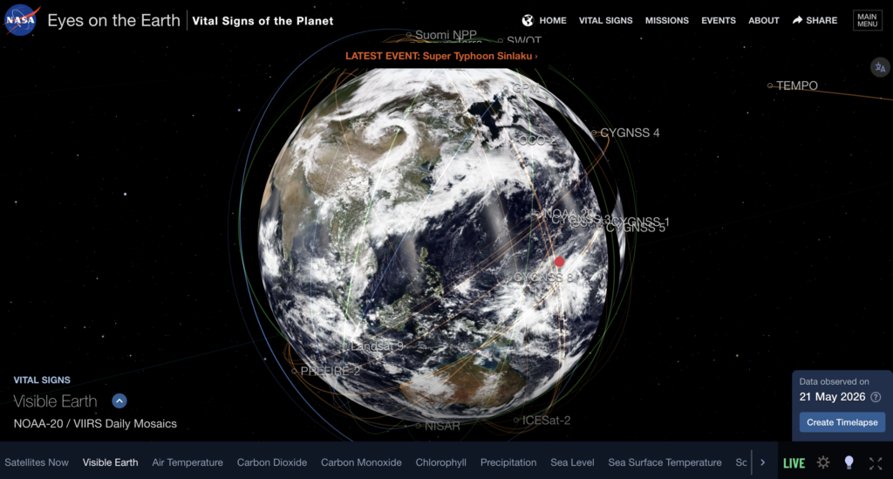
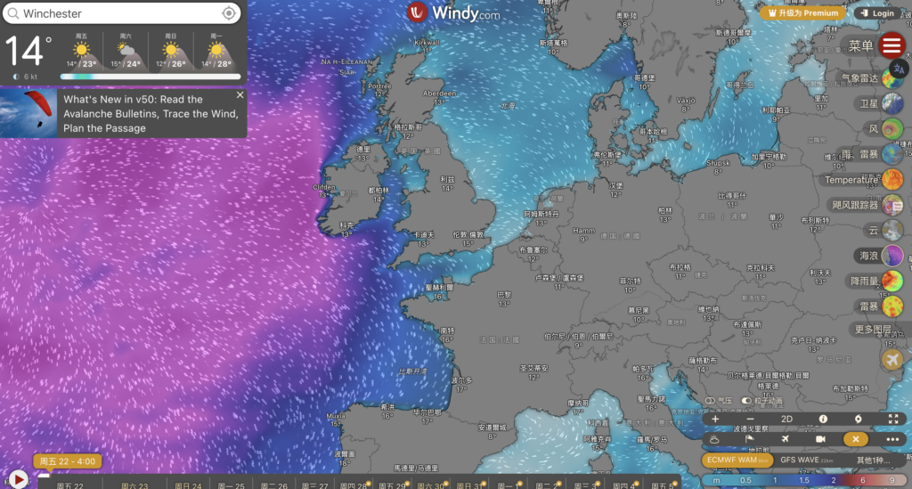
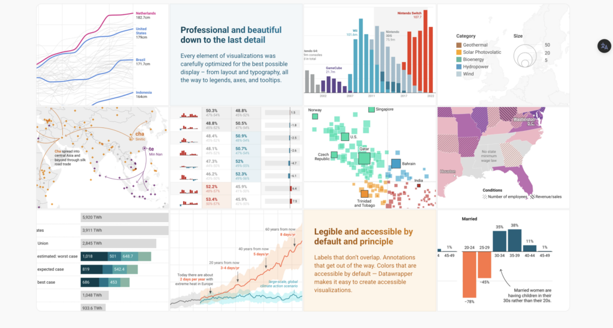
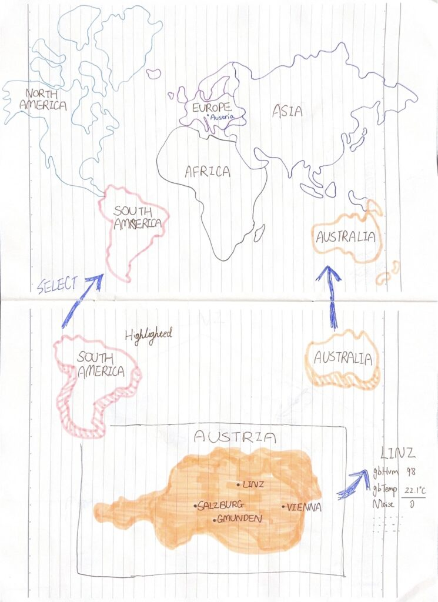
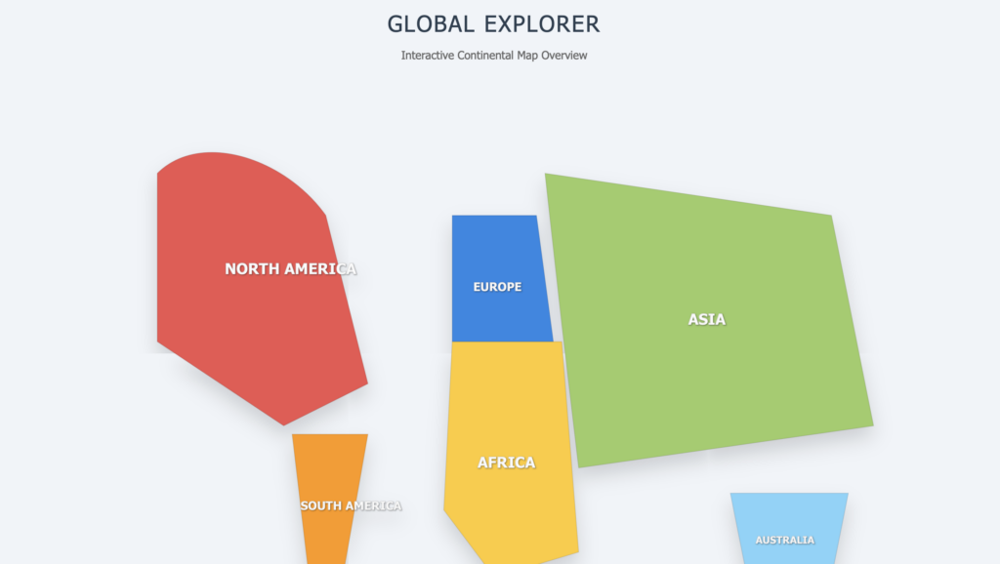
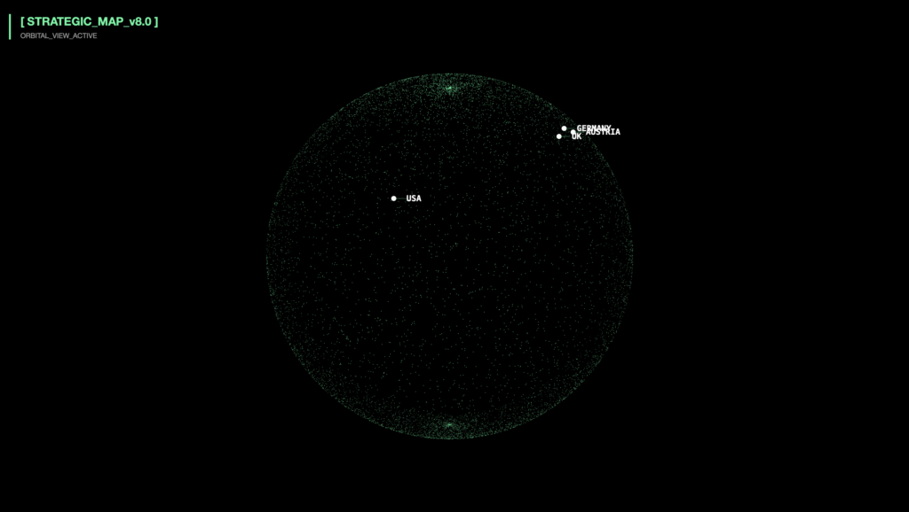
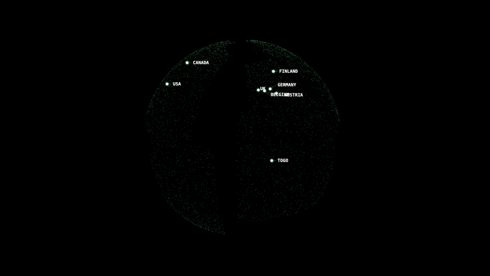
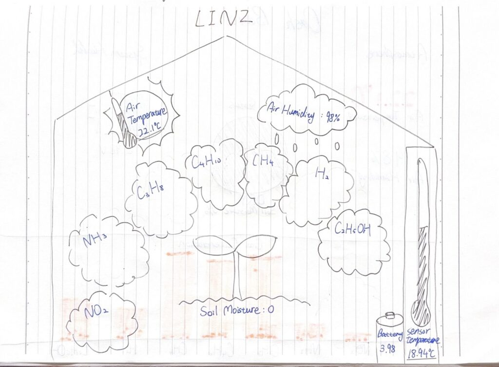
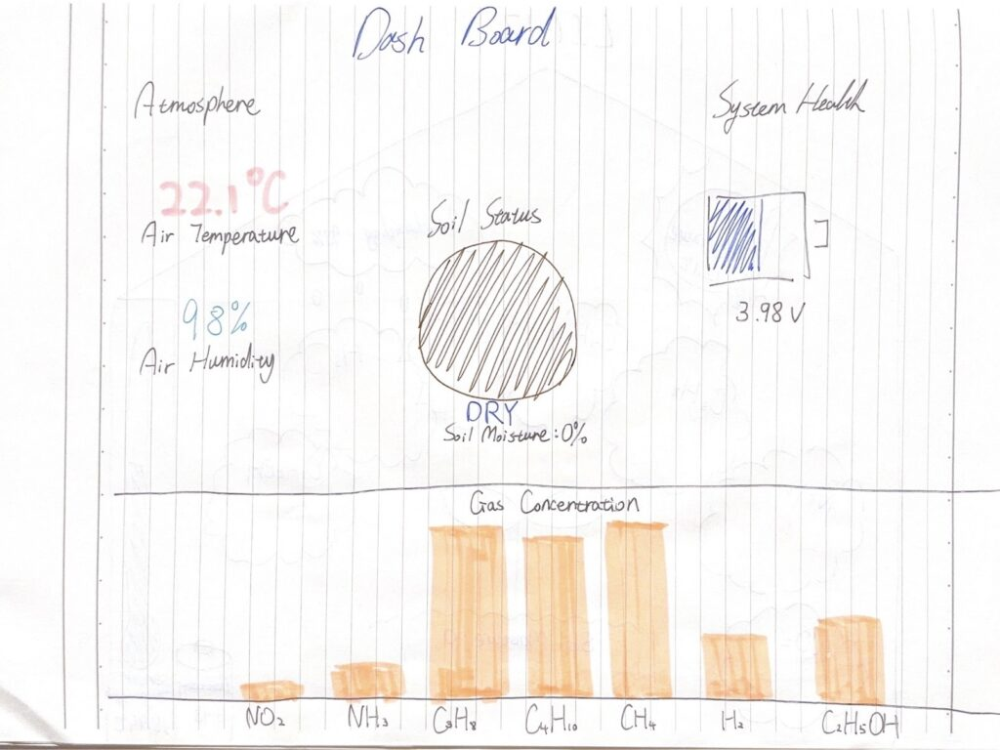

Best Case Examples
This section explores key existing platforms that informed the development of TeleAgriCulture. These examples were selected because they demonstrate effective approaches to environmental data visualisation, interactive mapping, and accessible scientific communication. Together, they provided critical insights into how complex environmental information can be translated into more intuitive and engaging user experiences.
NASA Climate Data Visualisation (Eyes on the Earth)

NASA’s climate visualisation tools, particularly Eyes on the Earth, provide real-time and historical environmental data through highly interactive 3D and spatial interfaces. These systems translate complex satellite and climate datasets into visually engaging representations of planetary systems, allowing users to explore global environmental changes in an intuitive way.
This project was particularly influential in demonstrating how large-scale environmental data can be made accessible without relying solely on raw numerical representation. The use of spatial storytelling and dynamic visual feedback informed TeleAgriCulture’s approach to translating environmental data into narrative-driven visual systems.
However, NASA’s tools are primarily designed for educational and scientific audiences, often still requiring a level of prior knowledge to fully interpret the data. This highlighted an opportunity for TeleAgriCulture to further simplify interpretation for non-expert and community-based users.
Source: NASA Climate Change (NASA, 2026)
Windy.com

Windy.com is an interactive weather and environmental platform that visualises global wind patterns, temperature, precipitation, and ocean conditions through real-time animated maps. Its strength lies in the clarity and responsiveness of its interface, allowing users to immediately understand environmental changes through motion-based visualisation.
The platform demonstrates how layered environmental datasets can be combined into a single interactive interface, where users can toggle between different data types seamlessly. Its use of smooth animation and intuitive controls strongly influenced the interaction design direction of TeleAgriCulture.
However, Windy.com remains largely data-driven and functional, prioritising meteorological accuracy over narrative or emotional engagement. This gap informed the decision in TeleAgriCulture to explore more storytelling-based and participatory visual systems.
Source: Windy (Windy.com, 2026)
Datawrapper

Datawrapper is a widely used data visualisation tool that enables users to create clear and responsive charts, maps, and tables. It is particularly strong in making statistical information accessible to non-technical users, with a strong emphasis on clarity, readability, and simplicity.
Unlike more complex scientific visualisation systems, Datawrapper focuses on editorial and communication-driven design, making it highly effective for journalism and public information contexts.
This platform influenced TeleAgriCulture’s approach to information hierarchy and clarity, particularly in how environmental data should be structured for non-expert audiences. However, Datawrapper remains primarily static and two-dimensional, which led to further exploration in TeleAgriCulture of dynamic, interactive, and narrative-based systems.
Source: Datawrapper (Datawrapper GmbH, 2026)
Worst Case Examples
This section examines poorly designed data visualisation systems and interfaces that influenced the development of TeleAgriCulture in a critical way. These examples highlight common design failures such as information overload, weak hierarchy, and low accessibility. By analysing these limitations, the project defines clearer design principles focused on simplicity, clarity, and narrative-driven communication.
Overloaded Scientific Dashboards
Overloaded dashboards are systems that display excessive amounts of information on a single interface, including multiple charts, metrics, and visual elements competing for user attention. Instead of supporting understanding, these systems often create confusion and reduce interpretability.
Common Characteristics:
- More than 15 charts displayed simultaneously
- Multiple KPI indicators competing visually
- Inconsistent visual styles without hierarchy
- Lack of narrative or guided interpretation
Problem:
These interfaces often lead to cognitive fatigue, where users struggle to identify key insights or meaningful patterns. Rather than supporting interpretation, the visual complexity overwhelms the user and reduces decision-making efficiency.
Relevance to This Project:
TeleAgriCulture explicitly avoids this design approach. Instead of data-heavy dashboards, the system prioritises:
- Clear visual hierarchy
- Narrative-driven structure
- Icon-based environmental communication
- Reduced cognitive load
This ensures that environmental data is communicated in a way that is immediately understandable, especially for non-expert users.
High Cognitive Load Interfaces
High cognitive load interfaces require excessive mental effort from users due to poor information organisation and lack of visual hierarchy. These systems often fail to guide users through the information space effectively.
Common Characteristics:
- Dense data tables with minimal spacing
- Small typography and poor readability
- Weak or inconsistent visual grouping
- Lack of interaction guidance or onboarding
Problem:
Users often struggle to understand what information is important, where to focus, or how to interact with the system. This results in reduced usability and disengagement.
Relevance to This Project:
One of the key goals of TeleAgriCulture is to reduce cognitive load through:
- Icon-based storytelling systems
- Colour-coded environmental states
- Animated visual feedback
- Modular interface design
These strategies aim to make environmental data instantly readable without requiring specialist knowledge.
Government Open Data Portals (Raw Data Interfaces)
Many government open data platforms provide environmental datasets in raw formats such as CSV, JSON, or Excel files. While these systems support transparency and data accessibility, they often lack user-friendly visualisation or interpretation layers.
Common Characteristics:
- Download-first interface design
- Minimal or no visual summaries
- Lack of contextual explanation
- Requires technical literacy for interpretation
Problem:
Although these platforms are highly transparent, they assume users already possess data literacy skills. As a result, non-expert users face significant barriers when trying to understand or engage with environmental datasets.
Relevance to This Project:
TeleAgriCulture responds directly to this limitation by transforming raw environmental data into:
- Visual narratives
- Interactive storytelling modules
- Accessible icon-based interpretations
The aim is to bridge the gap between raw environmental data and meaningful public understanding.
Design
During the analysis of the existing TeleAgriCulture platform, a key issue was identified: environmental data is currently stored in a fragmented and unstructured way. Data from different countries, regions, cities, and environmental categories is displayed in a mixed format, making it difficult for users to quickly locate specific information or compare datasets effectively.
In response to this problem, a new interface concept was developed to improve data organisation, navigation, and accessibility through a more structured interaction system. The goal of this design is to create a clearer data “archive logic”, allowing users to move efficiently between different geographical and environmental scales.
Core Concept — Hierarchical Data Navigation

The proposed interface follows a drill-down navigation model, where users progressively move from global to local environmental data.
The interaction structure is organised into four levels:
World → Continent → Country → City → Environmental Data
This layered structure allows users to maintain a sense of global context while gradually narrowing down to specific datasets.
Interface Structure
The interface is designed using a multi-layer visual system:
1. Global Layer (World View)
The top-level interface presents a full world map or potentially a 3D interactive globe.
At this stage, users can:
- View global environmental distribution
- Select continents or regions
- Maintain awareness of global context
Two possible design directions were explored at this stage:
- A flat interactive world map, suitable for clarity and fast navigation
- A 3D interactive globe, offering a more immersive and spatial experience
Both approaches support the same hierarchical interaction logic, but differ in terms of visual engagement and technical complexity.
2. Regional Layer (Continent Selection)
Once a continent is selected, the system highlights and isolates that region, reducing visual complexity and allowing users to focus on a specific geographical area.
This stage acts as a transitional filter between global overview and national-level exploration.
3. National Layer (Country Focus)
After selecting a region, users can zoom into a specific country.
At this level:
- The country boundary becomes the primary visual focus
- Surrounding regions fade or de-emphasise
- Key geographic structure becomes clearer
For example, selecting Austria allows the system to present a dedicated country-level view with embedded city markers.
4. City Layer (Local Environmental Data)
Within each country, users can select individual cities to access detailed environmental and meteorological data.
Each city acts as a data node containing real-time or simulated environmental metrics, such as:
- Temperature
- Humidity
- Moisture levels
- Additional environmental indicators
When a city is selected (e.g., Linz), a dedicated data panel appears, displaying structured environmental readings and potential historical or predictive visualisations.
This includes:
- Live sensor data values
- Environmental indicators (e.g. temperature, humidity, soil moisture)
- Space for time-based graphs or predictive trends
Interaction Logic
The system is designed as a progressive disclosure interface, where information is revealed gradually through user interaction.
This creates a clear interaction flow:
- Global overview → establishes context
- Regional selection → reduces complexity
- Country focus → narrows spatial attention
- City selection → reveals detailed data
- Data panel → provides analytical and visual feedback
This structure ensures that users are not overwhelmed by dense environmental datasets and can instead navigate information in a logical and intuitive way.
Design Rationale
This interface was developed to address a key limitation in the current TeleAgriCulture system: poor data organisation and lack of structured navigation.
By introducing a hierarchical geographic system, the design aims to:
- Improve data findability
- Reduce cognitive load
- Strengthen spatial understanding of environmental conditions
- Support comparison between regions
- Create a clearer environmental data archive system
The interaction model also supports both functional and speculative goals. Functionally, it improves usability and navigation. Conceptually, it frames environmental data as a spatial, layered system rather than a flat database.
Implementation Direction
The system could be implemented in two possible formats:
- Interactive 2D World Map Interface
- Faster to develop
- Clear and readable
- Suitable for data-heavy dashboards
- 3D Interactive Globe Interface
- More immersive and experiential
- Stronger visual impact
- Higher technical complexity
Both directions maintain the same underlying hierarchical logic, and the final choice depends on balancing usability, performance, and development constraints.
Interface Design & Prototyping Development
Following the identification of key issues within the existing TeleAgriCulture system particularly the disorganised structure of environmental data across countries, regions, and cities, a new interaction strategy was developed to improve data accessibility and navigation.
The main problem identified was that users struggle to locate specific datasets due to a lack of structured hierarchy. Environmental data is currently mixed across regions and categories, making comparison and retrieval inefficient.
To address this, a new hierarchical navigation system (World → Continent → Country → City → Data) was proposed. This system was then translated into two interactive prototypes using VS Code to explore different implementation directions.
Prototype 1 — 2D Interactive World Map Interface

Link to code: https://github.com/nanashireen/Creative-Industries/blob/main/src/Prototype/2DPrototype.html
The first prototype explores a 2D flat interactive map system, designed as a fast, readable, and data-efficient solution.
The interface presents a modern, abstract world map composed of geometric continent blocks. Each continent is represented as a distinct coloured shape with clear typography and subtle shadow effects to indicate interactivity.
Key Characteristics:
- Flat, minimalistic UI design
- High-contrast colour coding for each continent
- Clear typographic labels (e.g. ASIA, EUROPE, AFRICA)
- Hover/click-based selection structure
- Drop-shadow effects to indicate clickable elements
Interaction Logic:
Users begin at a global level and interact directly with continents. Each selection acts as a filter, allowing the system to progressively narrow down into countries, cities, and finally environmental data.
This prototype prioritises:
- Clarity
- Speed of interaction
- Low cognitive load
- Data readability
It is particularly suitable for dashboard-style environments where fast access to information is more important than spatial immersion.
Prototype 2 — 3D Interactive Globe Interface

Link to code: https://github.com/nanashireen/Creative-Industries/blob/main/src/Prototype/3DPrototype1.html
The second prototype explores a more immersive 3D data visualisation system, designed as a dynamic global “data sphere”.
Instead of a flat map, the system uses a particle-based globe model, where thousands of green points form a digital representation of Earth. This creates a sci-fi inspired, real-time data visualization aesthetic.
Key Characteristics:
- Particle-based 3D Earth model
- Dark, high-contrast background (black + neon green)
- White node markers representing countries or data points
- System-style UI overlays (e.g. STRATEGIC_MAP_v8.0)
- Orbital / rotation-based perspective
Interaction Logic:
Users navigate through a spatial globe interface where geographic nodes (countries such as USA, UK, Germany, Austria, etc.) are distributed across a rotating Earth model.
As the system evolves, the globe becomes more geographically structured, with continents and regions gradually emerging from the particle field, suggesting a transition from abstract data to spatially grounded information.
This prototype explores:
- Spatial immersion
- Real-time data visualisation
- Global systems thinking
- High-impact visual storytelling
However, it introduces higher technical complexity, particularly in terms of rendering performance and interaction design.
Final Prototype — 3D Interactive Globe System

Link to code: https://github.com/nanashireen/Creative-Industries/blob/main/src/Prototype/3DPrototype2.html
After exploring both 2D and 3D interface directions, the final design decision was to adopt the 3D interactive globe system as the primary visual and interaction model for TeleAgriCulture.
This decision was based on the system’s ability to better represent the complexity, scale, and interconnected nature of global environmental data, while also providing a stronger sense of immersion and spatial understanding compared to the 2D alternative.
Final 3D System Design
The selected prototype presents a particle-based interactive Earth model, constructed from thousands of green luminous points forming a dynamic globe. Unlike traditional map representations, this system visualises the Earth as a living data structure, where environmental and geographical information emerges through spatial patterns rather than static boundaries.
Key Visual Characteristics:
- A spherical Earth formed from dense green particle fields
- Subtle continental structures emerging from data clustering
- A dark, high-contrast background to enhance visibility
- White node markers representing countries and data points
- Minimal UI overlays to maintain focus on spatial data
Evolving Data Structure
In this final version, the globe no longer appears as a perfect abstract sphere. Instead, it begins to reveal geographically meaningful structure, where particle distribution subtly forms continental shapes such as:
- The Americas on the left side
- Europe and Africa in the central region
- Asia extending across the right side
This transition from abstraction to structure reflects the system’s core idea: environmental data is not static, but spatially and dynamically organised.
Data Node System
The interface includes interactive country-level nodes, represented as white pins placed across the globe.
As the system evolves, additional nodes appear and reorganise based on geographic clustering, including:
- North America: USA, Canada
- Europe: UK, Germany, Austria, Belgium, Finland
- Africa: Togo
These nodes act as entry points into deeper layers of environmental data, supporting the hierarchical navigation model defined earlier (World → Country → City → Data).
Interaction Behaviour
The globe operates as a rotational and exploratory interface, allowing users to:
- Rotate and explore global data distribution
- Select geographic nodes for deeper analysis
- Observe changes in data density and clustering
- Transition between macro and micro environmental scales
The interface behaves like a live data environment, where geography and information are fused into a single spatial system.
Design Rationale
Following a review of both the 2D and 3D prototype directions, feedback from Julian (project supervisor) indicated a stronger preference for the 3D globe approach. This feedback played a key role in the final decision-making process.
The 3D globe was ultimately selected over the 2D map because it better supports the conceptual goals of TeleAgriCulture:
- It reflects the global interconnectedness of environmental systems
- It provides a stronger sense of data spatiality and immersion
- It transforms environmental data into an explorable world rather than a static dataset
- It aligns with the project’s goal of making data feel experiential and narrative-driven
While more technically complex than the 2D alternative, the 3D system offers a significantly richer representation of environmental relationships and user engagement.
Final Outcome
The adoption of the 3D interactive globe establishes TeleAgriCulture as a spatial data storytelling system, where environmental information is no longer presented as isolated datasets, but as part of a dynamic, interconnected global structure.
This final direction reinforces the project’s central aim: to transform environmental data into an interactive, visual, and experiential system of understanding.
Environmental Data Visualisation Design Development
In addition to reconsidering the data archive and navigation structure of TeleAgriCulture, another major issue identified during research was the way environmental data was presented throughout the existing platform.
Most of the data currently appears either as raw numerical values or as simple line and bar graphs. While this format may be useful for technical users, it creates significant barriers for non-specialist audiences. The users of TeleAgriCulture are not limited to scientists or data analysts; they may also include farmers, community participants, designers, artists, or educational users who require more intuitive ways of understanding environmental conditions.
This led to the exploration of alternative visualisation approaches that could communicate environmental data more clearly through icons, spatial organisation, and storytelling-based interaction systems, while still preserving access to raw datasets for expert users.
Balancing Accessibility and Raw Data
A key design consideration throughout this process was balancing:
- Accessibility for non-expert audiences
- Flexibility for expert and technical users
Although the project aimed to simplify environmental interpretation through visual systems, it was also considered important to preserve access to raw numerical data.
Maintaining raw datasets allows:
- Researchers to train machine learning models
- Developers to work with environmental databases
- Digital artists to use live datasets creatively
- Technical users to conduct detailed analysis
As a result, the project explored interfaces that could layer simplified visual communication on top of deeper technical information rather than replacing raw data entirely.
Design Concept 1 — Illustrated Greenhouse Storytelling Interface

The first design explored a highly visual and narrative-driven interface inspired by children’s storybooks and educational illustrations.
The interface presented environmental data through a hand-drawn greenhouse scene representing a monitored ecological environment. Instead of charts or dashboards, environmental conditions were embedded directly into visual metaphors within the scene.
Interface Features
The greenhouse acted as a symbolic environment where:
- A growing plant represented ecological health
- Rain clouds visualised humidity
- Soil labels represented moisture conditions
- Floating gas “clouds” displayed atmospheric chemical data
- Temperature and battery indicators were integrated into the environment visually
The system included environmental metrics such as:
- Air temperature
- Air humidity
- Soil moisture
- Sensor temperature
- Battery levels
- Gas concentration data (NH₃, NO₂, CH₄, etc.)
Rather than functioning as a traditional dashboard, the interface transformed data into an illustrated environmental narrative.
Design Intention
The purpose of this concept was to make environmental information feel:
- Friendly
- Intuitive
- Visually engaging
- Understandable for all ages
The interface aimed to reduce technical intimidation by presenting environmental systems almost like an interactive storybook. Users could select a geographic region, after which a personalised greenhouse scene would appear showing that location’s environmental conditions through animated visual elements.
This approach strongly aligned with the project’s earlier goals surrounding visual storytelling and accessibility.
Design Concept 2 — Modular Environmental Dashboard

The second concept evolved the illustrated greenhouse idea into a more structured and professional dashboard system.
Instead of embedding data entirely into symbolic drawings, this version reorganised environmental information into clear interface modules and visual data components while still retaining icon-based readability.
The interface was divided into several key sections:
- Atmospheric conditions
- Soil status
- System health
- Gas concentration visualisations
Interface Features
Atmosphere Module
Displayed:
- Air temperature
- Air humidity
using large numerical indicators combined with colour coding and icon systems.
Soil Status Module
Presented soil moisture conditions using:
- Circular status graphics
- Visual texture indicators
- Simplified condition labels such as “DRY”
This made environmental states immediately understandable without requiring users to interpret raw percentages alone.
System Health Module
Displayed hardware and sensor status information such as:
- Battery levels
- Voltage readings
using familiar UI components like battery indicators and progress visuals.
Gas Concentration Chart
The floating “gas clouds” from the first concept were transformed into a structured bar chart comparing concentrations of:
- NO₂
- NH₃
- CH₄
- C₃H₈
- H₂
- and other monitored gases
This created a clearer analytical overview while maintaining readability.
Personalisation and Modular Design
An additional idea developed during this stage was interface customisation.
Rather than forcing all users to view the same dashboard layout, the system could allow users to:
- Add or remove specific data modules
- Prioritise preferred environmental indicators
- Rearrange dashboard sections
- Create personalised monitoring views
This supports different types of users with different goals, from technical monitoring to creative exploration.
Final Design Decision
Following discussions and feedback sessions with Julian and other project meetings, the second dashboard concept was selected as the final direction.
Although the first illustrated greenhouse interface was visually expressive and highly accessible, it was ultimately considered:
- Too visually complex
- Difficult to scale
- Overly playful for long-term platform use
In contrast, the second dashboard design achieved a stronger balance between:
- Professional readability
- Accessibility
- Structured data organisation
- Visual clarity
- Customisability
While still incorporating icons, visual grouping, and intuitive interpretation systems, the dashboard approach provided a cleaner and more scalable solution for presenting environmental data to both specialist and non-specialist audiences.
This final direction reflects the broader goal of TeleAgriCulture: creating environmental interfaces that remain technically useful while becoming significantly more understandable and approachable for wider communities.
Research and Design Summary
Through the research and design process, the TeleAgriCulture project evolved from a broad exploration of environmental data communication into a more focused investigation of accessibility, interaction design, and spatial data storytelling.
The research phase identified several key issues within existing environmental platforms, including:
- fragmented and poorly organised datasets
- overloaded dashboards and high cognitive load interfaces
- reliance on raw numerical data that is difficult for non-expert users to interpret
These findings informed the development of a more accessible and visually structured system that combines environmental monitoring with interactive storytelling and intuitive interface design.
The design process then explored multiple interface directions, including:
- hierarchical global navigation systems
- 2D and 3D geographic interaction models
- illustrated storytelling interfaces
- modular environmental dashboards
Through iterative prototyping and feedback discussions with Julian, the final direction became clearer. The project ultimately selected:
- the 3D interactive globe system as the primary navigation and spatial interaction layer
- the modular dashboard interface as the final environmental data visualisation system
Together, these two elements create a balance between:
- immersion and usability
- storytelling and technical clarity
- accessibility and professional functionality
The 3D globe supports exploration and global environmental awareness, while the dashboard system allows users to access environmental information in a clearer, more organised, and customisable format.
Next Development Stage
With the research and conceptual design phase established, the next stage of the project can move into practical implementation and refinement.
The upcoming development process will focus on:
- building the interactive 3D globe system
- connecting geographic nodes to environmental datasets
- developing the modular dashboard interface
- integrating animation and interaction behaviours
- testing usability and readability across different user groups
This stage will begin transforming the project from speculative interface concepts into a functional interactive prototype that combines spatial exploration with accessible environmental data interpretation.
References
NASA (2026) Climate Change: Vital Signs of the Planet – Eyes on the Earth. Available at: https://science.nasa.gov/climate-change/
Windy.com (2026) Windy: Weather Radar, Wind and Waves Forecast. Available at: https://www.windy.com/
Datawrapper GmbH (2026) Datawrapper – Create Charts, Maps and Tables. Available at: https://www.datawrapper.de/
Scribd (n.d.) Introduction to Data Visualization – Unit 1. Available at: https://www.scribd.com/document/960088341/Introduction-to-Data-Visualization-UNIT-1
MDPI (2021) Sustainability Journal Article on Data Visualization and Accessibility. Available at: https://www.mdpi.com/2071-1050/13/24/13740